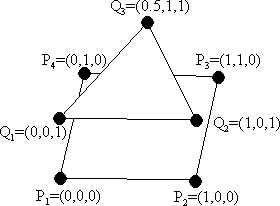
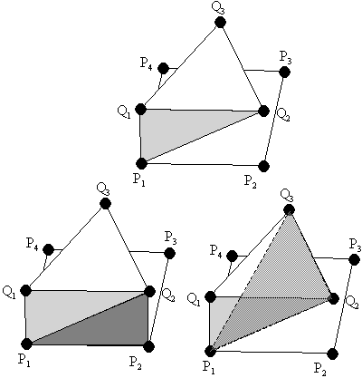
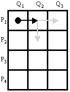
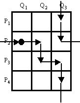
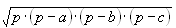

Stitching
Time Limit: 4 Seconds
Statement of the problem
 We want to reconstruct a surface from a two polygons. Think of it
as if we sliced a volume (e.g. a CAT scan (på svenska ungefär skiktröntgen)) at
two z-coordinates, converted these two planar contours into polygons, and
we would now like to rebuild a surface of the body between the polygonal cuts
from these polygons. In this problem, the resulting surface consists of
triangles only. In the figure to the right, the objective is to "stitch" the
square with the triangle. Notice that vertices of the tile triangles which
combines these two contour polygons is vertices of the contour polygons, with
the vertices of each tile taken two from one polygon and one from the other.
 Now suppose we have decided to form a triangle using P1,Q1,Q2, shown in the upper left picture. If the vertices of the contour are in counterclockwise order and we are forming triangles in counterclockwise order, we now have two options. Since the surface built must be without "holes", P1 and Q2 must be part of the next triangle. This leaves us with either taking the the next P-vertex, shown in the left bottom figure, or taking the next Q-vertex, shown in the right bottom figure.
Since each triangle uses one new vertex from the contour polygons, the resulting surface will consist of 7 (4+3) triangles.
 We would like to know the minimum possible area of such a surface. One way of solving this problem is to form a matrix. Suppose the number of vertices of the polygons are m and n. Then build a matrix with m rows and n columns. The position in the matrix corresponds to the two vertices that the next, new, triangle has in common with the last one. A movement to the right means that we are constructing a new triangle using a new vertex from the second polygon (Q), while a movement downwards means a new triangle using a vertex from the first polygon (P). The movement wraps at the rightmost column and the downmost row. In the example, we started with the points P1 and Q1, and used the point Q2 to from a triangle. Then we could either pick P2 as our next point, a downward movement, or pick Q3 as our next point, a rightward movement. Of course, the path must end up at the starting position. For each movement, a cost is associated, namely the area of the triangle.
 So, the optimization problem can be restated as the problem of finding a closed path with the minimum sum of the costs in the matrix grid, where each horizontal line on the grid is crossed exactly once by the path, and where each vertical line on the grid is crossed exactly once by the path, as in the figure to the right.
Hint. One simple formula to calculate the area of a triangle is Heron's formula: , where a, b and c are the lengths of the sides, and p is the semiperimeter (a+b+c)/2.
Input
The input starts with a single number on a line, N,
which stands for the number of test cases. Following this line are the N
test cases. Each test case starts with three numbers m, n,
z1. m and n are integers, greater than 2 but
less than or equal to 20. m stands for the number of points in the first
polygon and n stands for the number of points in the second polygon.
z1 is a real positive number which stands for the
z-coordinates for the vertices in the second polygon. The
z-coordinates for the vertices in the first polygon is zero. Following
this line are m+n lines with x- and y-coordinates of
the simple, not necessarily convex, polygons in counterclockwise order. All
coordinates are real numbers. First are the coordinates for the first polygon,
followed by the coordinates for the second polygon.
Output
For each test case, output the minimum area of the surface
connecting the both polygons, using five decimal digits. However, trailing zeros
may be omitted. The output is a real number. A relative error of up to 0.01% is
allowed.
Example
Input: Output: 2 3.72474 4 3 1 8.00000 0 0 1 0 1 1 0 1 0 0 1 0 0.5 1 4 4 2 0 0 1 0 1 1 0 1 0 0 1 0 1 1 0 1